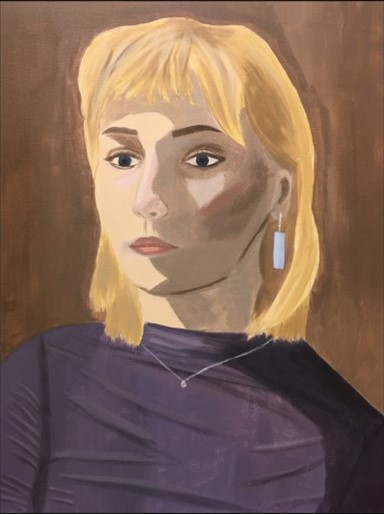
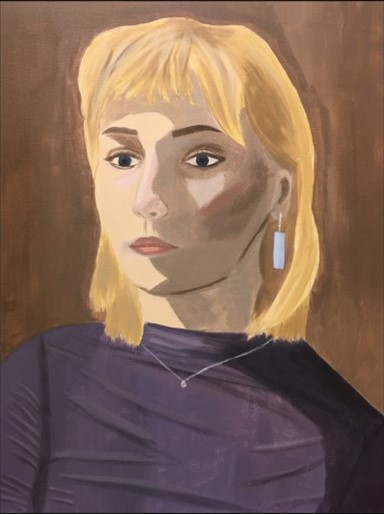

Kreative fag er fag for fremtiden. Med kreative fag blir du bedre til å uttrykke deg!
Grafisk design
Rask oversikt
Dette lærer du
- Utforme grafisk design og illustrasjoner til
- Ulike medieprodukter
- Sette ideer ut i visuell form, til tradisjonelle og nye medier
- Kommunisere med form, farge, symboler ogtypografi
- Bruke verktøy som Adobe InDesign, Photoshop og Illustrator
Dette gjør vi
- Mye praktisk arbeid
- Kreativt idearbeid
- Produserer medieprodukter som
- For eksempel:
- Visuelle identiteter
- Magasiner
- Plakater
- Logoer
- Websider
- Apper
- Coverdesign
Faget er nyttig fordi
- du utvikler kreativiteten din
- forenkle og tydeliggjøre budskap ved å bruke visuelle virkemidler
- du utvikler din digitale kompetanse
- du lærer å bruke profesjonell programvare, som er nyttig når du skal ut i arbeidslivet
 
